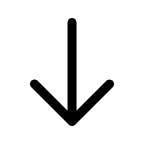

Introduction
- vue.js
- php
- html
- scss
- javascript
주업무 내용 : 웹퍼블리싱, 프론트 개발, 개발 PM(백앤드 개발자 및 디자이너 업무 진행 관리), 고객/번역사 문의 사항 관리 및 답변 드리기, 개발로그에 개발 소식 글쓰기, 영/중/일/스페인어 로컬리제이션 담당 등 렉클 개발 인원 : 권지민 외 1명 (총 2명)
정규직 전환되기 전, 렉스클라우드 플랫폼의 랜딩 페이지 리뉴얼을 담당하였습니다. 정규직 전환 이후부터는 렉스클라우드 플랫폼 전체에 대한 리뉴얼 및 새로운 페이지 개발 작업이 주 업무였습니다. 플랫폼이 워낙 방대한 페이지와 기능을 가지고 있기도 하고, 고객/번역사/내부직원에 따라 다른 UI와 기능이 구현되어야 해서 총 2명이서 담당 및 관리하였습니다.
렉스클라우드 플랫폼은 로그인을 해야 제 작업물을 보실 수 있기 때문에, 자세한 업무 기록은 노션페이지에 모아두었습니다.
아래 링크에서 꼭 확인해 보세요.